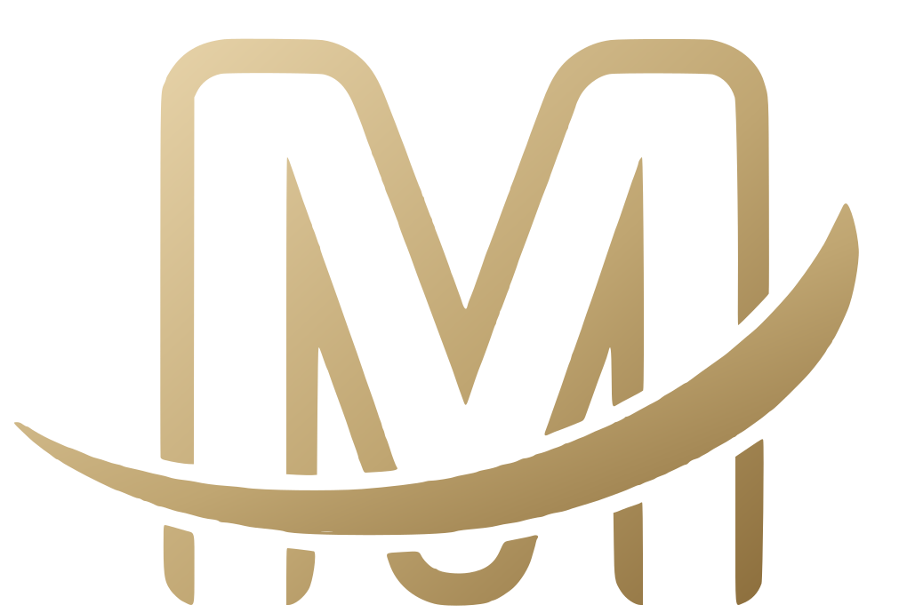

O endereço que você abriu não existe ou mudou de lugar.
Voltar ao início
Usamos cookies de medição (Google Analytics) só com a sua permissão, para entender como o site é usado. Nenhum dado de saúde é coletado. Saiba mais.